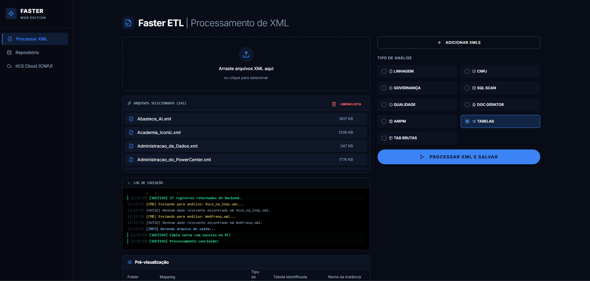
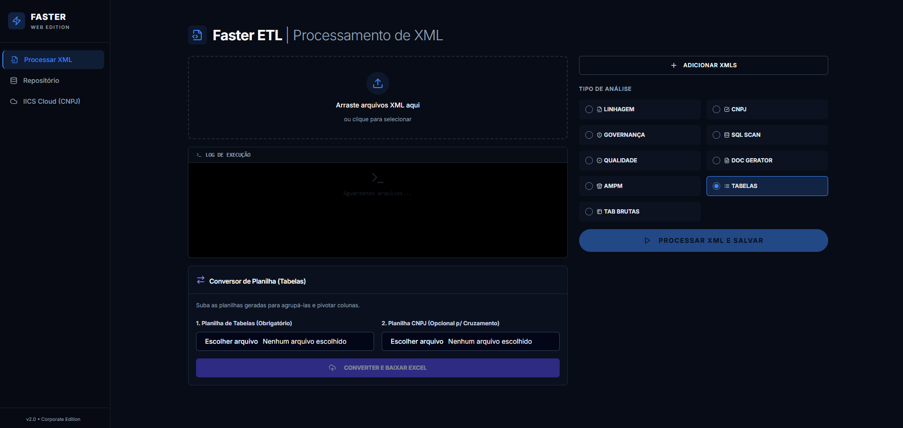
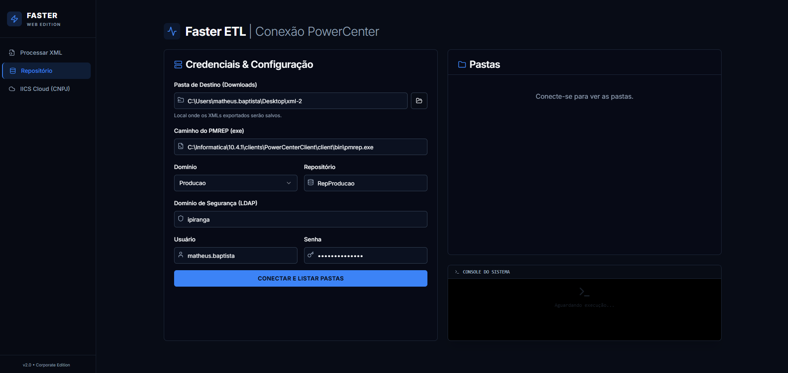
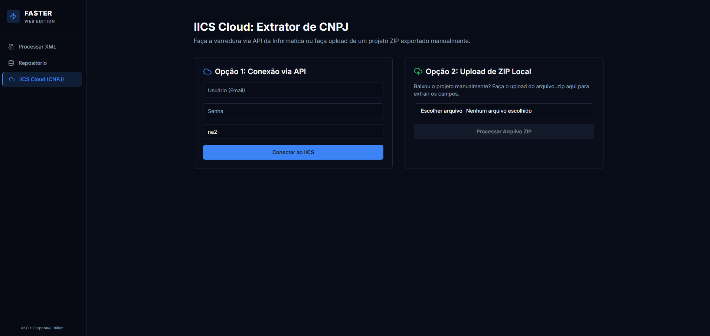

Faster
Plataforma de auditoria, documentação e governança de dados desenvolvida para automatizar a análise de processos ETL no Informatica PowerCenter.

O Desafio
O projeto Faster surgiu da necessidade de eliminar atividades altamente manuais relacionadas à documentação técnica, auditoria de mappings e análise de objetos ETL. Antes da solução, essas tarefas exigiam a abertura individual de centenas de arquivos XML e a navegação exaustiva por objetos do PowerCenter.
Esse processo manual tornava a análise lenta, extremamente sujeita a erros humanos e de difícil rastreabilidade, impactando negativamente projetos de migração e a governança de dados da empresa.
A Solução: Plataforma Faster
A solução foi desenvolvida utilizando integração direta com a API e os metadados do Informatica PowerCenter. O objetivo principal do Faster é transformar informações técnicas complexas do PowerCenter em conhecimento estruturado e acessível, permitindo extrair, processar e organizar dados automaticamente.
Com essa plataforma, as equipes de dados podem realizar auditorias, análises de impacto, governança e documentação de forma rápida, escalável e 100% confiável.
Principais Funcionalidades
- Extração Automatizada: Download e processamento de XMLs do Informatica PowerCenter.
- Leitura Profunda: Interpretação inteligente de mappings, sessions, workflows e transformações.
- SQL Scan: Identificação automática de SQL Overrides dentro dos fluxos.
- Data Lineage: Mapeamento da linhagem de dados de ponta a ponta (Source → Target).
- Governança e Catalogação: Organização de metadados e geração de documentação técnica padronizada.
- Auditoria Automática: Verificação de padrões de desenvolvimento e geração de relatórios técnicos/gerenciais.
Resultados Alcançados
- Redução de Esforço: Queda de aproximadamente 85% do esforço operacional em atividades de auditoria e documentação ETL.
- Visibilidade: Aumento substancial da rastreabilidade e visibilidade dos fluxos de dados.
- Precisão: Redução drástica de erros manuais na análise e engenharia reversa de processos.
- Escalabilidade: Maior eficiência técnica em projetos complexos de migração, sustentação e governança corporativa.
Interface da Aplicação
Abaixo estão algumas visualizações das funcionalidades da Plataforma Faster.



Código em Destaque
O trecho de código abaixo pertence ao motor de análise cnpj_rule.py do Faster. Ele demonstra o uso da biblioteca xml.etree.ElementTree em Python para sanitizar e realizar o parsing estrutural profundo dos arquivos XML do PowerCenter, mapeando a relação complexa entre *Sessions*, *Mapplets* e *Sources*.
import pandas as pd
import xml.etree.ElementTree as ET
import re
class CnpjRule:
def execute(self, xml_file_path):
try:
# 1. Sanitização do XML gerado pelo PowerCenter
with open(xml_file_path, 'r', encoding='utf-8', errors='ignore') as f:
content = f.read()
content = re.sub(r'xmlns="[^"]+"', '', content, count=1)
root = ET.fromstring(content)
rows = []
# 2. Mapeamento de Sessions
session_map = {}
for session in root.findall(".//SESSION"):
m_name = session.get("MAPPINGNAME")
s_name = session.get("NAME")
if m_name and s_name:
if m_name not in session_map:
session_map[m_name] = []
session_map[m_name].append(s_name)
# 3. Mapear uso de Mapplets e Sources dentro de Mappings
mapplet_usage_in_mapping = {}
source_usage_in_mapping = {}
for mapping in root.findall(".//MAPPING"):
m_name = mapping.get("NAME")
for instance in mapping.findall("INSTANCE"):
i_type = instance.get("TYPE")
ref_name = instance.get("TRANSFORMATION_NAME") or instance.get("REFOBJECTNAME")
if i_type == "MAPPLET" and ref_name:
if ref_name not in mapplet_usage_in_mapping:
mapplet_usage_in_mapping[ref_name] = set()
mapplet_usage_in_mapping[ref_name].add(m_name)
elif i_type == "SOURCE":
src_name = instance.get("TRANSFORMATION_NAME") or instance.get("NAME")
if src_name:
if src_name not in source_usage_in_mapping:
source_usage_in_mapping[src_name] = set()
source_usage_in_mapping[src_name].add(m_name)
# O script continua fazendo a varredura e gerando o DataFrame (Pandas)...